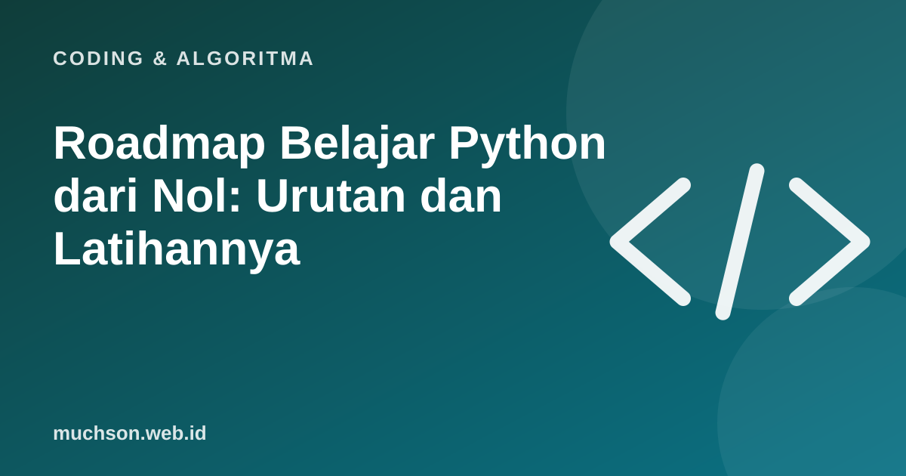

Beranda › Artikel › Coding & Algoritma
Coding & AlgoritmaRoadmap Belajar Python dari Nol: Urutan dan Latihannya
Python sering direkomendasikan untuk pemula karena sintaksnya mudah dibaca, dan dipakai luas di data, otomasi, dan AI. Hambatan terbesar biasanya bukan bahasanya, melainkan tidak tahu urutan belajar dan tidak membangun kebiasaan berlatih.

Peta belajar delapan minggu
Cara berlatih yang efektif
- Ketik sendiri semua kode, jangan hanya menonton.
- Setelah memahami satu konsep, buat contoh versi Anda sendiri.
- Berlatih tiap hari, meski hanya 30 menit.
- Latihan langsung di browser menghilangkan hambatan instalasi di awal.
- Pecah masalah menjadi langkah kecil sebelum menulis kode.
- Baca pesan error: biasanya menyebut baris dan jenis masalah.
Kesalahan yang sering menghentikan pemula
Memakai AI untuk belajar
AI bisa menjadi tutor yang sabar jika dipakai benar: minta petunjuk, bukan jawaban penuh, lalu jelaskan kode itu dengan kata Anda sendiri. Bila tidak bisa menjelaskan, Anda belum benar-benar paham.
Tanya jawab
Apakah perlu matematika untuk belajar Python?
Dasar-dasar cukup. Matematika lebih dibutuhkan pada bidang tertentu seperti data science dan machine learning.
Berapa lama sampai bisa bekerja sebagai programmer?
Sangat bervariasi. Konsistensi, proyek nyata, dan portofolio lebih menentukan daripada lamanya kursus.
Python atau JavaScript dulu?
Python cocok untuk mempelajari logika, data, dan otomasi. JavaScript cocok bila tujuan Anda membuat situs web. Pilih sesuai tujuan.